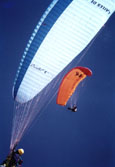
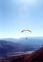
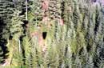

{kind=link}



{kind=link}



{kind=link}



  
Click a thumbnail image to see the full size version.
Other Paragliding Sites:
Big Air Paragliding. /
Tiger Mountain Paragliding.
/
 Northwest
Paragliding Club I /
Northwest Paragliding Club II /
CrossCountry Magazine /
Hang Gliding and the Oz Report /
Hang Gliding WWW /
Soar High /
Kurious Paragliding /
Northwest
Paragliding Club I /
Northwest Paragliding Club II /
CrossCountry Magazine /
Hang Gliding and the Oz Report /
Hang Gliding WWW /
Soar High /
Kurious Paragliding /

Do Not Spam Me! I hate All unsolicited commercial junk E-mail and I complain or sue.
Warning: Paragliding and Hanggliding can be a very dangerous sport. If you attempt to fly a Paraglider or Hangglider without the proper training and check-offs, or do something improper while flying, it very possible you may hurt, permanently damage, or kill your self. However, it can be very rewarding and worth a certain level of risk. If a pilot is trained, pays attention to what he or she is doing and follows basic common sense rules, it can be generally safe. But remember when you are thousands of feet above the ground you better think at all times about what you are doing and where you are. The views and things you can see will never be forgotten. You will have the vantage point of an eagle or hawk, and sometimes you will fly with them too.
I make no warranty to any information in here as it is sent to me and collected from many sources. All data is "as-is" and readers assume any risk for any mis/disinformation contained in here. Some things may be broke, many things have been fixed. All Content Copyright (c) 1992-2001 Ben de Lisle, All Rights Reserved, with exception to content donated or provided by others who may retain their own copyrights.
Last update 07-01-2001 > Access count for this page
Where is this server?
 Washington State
Washington State - Pages hosted by
- Pages hosted by
A page since 1993
 .end.of.file.
.end.of.file.